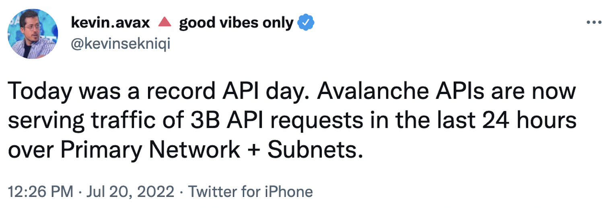
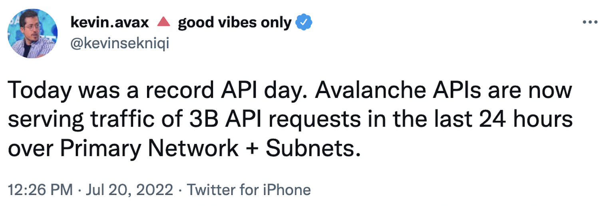

Why Avalanche
Who am I?
- 이규호 (Gyuho Lee)
- Protocol Engineer, Ava Labs
- github.com/gyuho
- linkedin.com/in/gyuho
- twitter.com/gyuhox
- t.me/leegyuho (Telegram)
Web3 needs...
- Decentralization: Network of millions of nodes
- Scalability: Consensus of sub-second finality
- Customization: Support app-specific chain
News

Yes! Avalanche solves "scalability", while "decentralized" with novel consensus algorithm and "customizable" with subnets.
Agenda
- What is Avalanche? (Overview)
- Avalanche Consensus (Snowman)
- Avalanche Subnet
- Avalanche vs. Others
- FAQs
- Q&As
What is Avalanche?
Overview
What sets Avalanche apart?
"The fact that it works, it's fast, it scales, can grow and absorb any use case, can be used for
compliant asset offerings. Bitcoin is single asset, single chain. Ethereum is multi-asset, single
chain. Avalanche is
Avalanche ($AVAX)
- Mainnet launched in Sep 2020
- Supports Ethereum Virtual Machine (EVM)
- Novel Consensus Algorithm: Snowman
- Proof-of-Stake
- Fast and Scalable L1 (>6K EVM TPS)
- Reliable (no downtime, no reorg)
- Platform for deploying "Subnets"
Avalanche Today
>3.6B requests (a day, July 2022) with ~80ms latency
 

Avalanche Today
Subnet effect -- scales without congestion
Avalanche Today
DFK subnet using more gas than Polygon and BNB
DFK subnet == Over 200-million requests per day
Avalanche Today
Subnet horizontally scales!
>800 TPS (possible >6,000 TPS)
Avalanche TPS
Customize subnet-evm for super-high TPS (>6K)
Different gas limit than primary network
Avalanche TPS
Build custom VM for high TPS workloads (>44K)
Possible with Avalanche Consensus + Subnets
- Consensus with sub-second finality (Fast)
- Decentralized with >1,200 validators (Secure)
- Subnets for application specific chains (Isolation)
Avalanche Consensus ☃️
Snowman Protocol
Consensus
"Assume a collection of processes that can propose values. A consensus algorithm ensures that a single one among the proposed values is chosen." Leslie Lamport, Paxos Made Simple (2001)
Should this transaction be placed in a block or not?
PoW or PoS is NOT a consensus mechanism!
Consensus Until Now
Classical (Lamport 1998, Paxos/Raft/etcd)
- Quick finality but does not scale
- Quadratic message complexity
- Permissioned, requires precise membership
Consensus Until Now
Nakamoto (Bitcoin 2008)
- Robust, no need for precise membership
- High latency, low throughput
- Wastes energy, not green, not sustainable
Consensus Until Now
PBFT (1999)
- Powers many PoS networks (Tendermint, Casper)
- Committee/leader-based
- Can't scale easily ("leader/coordinator" dilemma)
- Quorum-based: must know all participants
- Fast when membership is small
- Deterministic safety (100% safe)
- Hard limit on the Byzantine adversaries
- Many are very complicated
Avalanche Consensus Family
- Published in 2020
- Instant finality, low latency (~1 sec)
- High throughput (>6,000 TPS)
- Scales >10-million nodes
- Robust, no need for precise membership
- Leaderless
- Quiescent, green, sustainable
- Inspired by epidemic protocols and gossip networks
- New idea: deliberately metastable
Avalanche Sustainability

Binary Consensus
- Pick one
red /blue -- no correct answer - Adopt the majority color by repeated sub-sampling
- Consensus results in the entire network agreeing on either
red orblue - Even with 50/50 split, random perturbation in the sampling results in a single value being selected

At the beginning, pick any color (no correct answer)
Radomly sub-sample the network

"Red" is the majority from the sample
Adopt the majority color, "red"

Repeat this random sampling in parallel, in all nodes
Repeated random sampling perturbs conflicting state

Sequence of metastable process of random sampling
All converge to the same value (agreement)

"The protocol is designed to tip" (YouTube)
See also All Access with Emin Gün Sirer - Ep. 51 (2023)
Fast Finality
Avalanche == no block re-org, no longest chain rule
- Re-org in game? May lose item after tx revert
- Re-org in bridge? Must wait longer for source chain
- Re-org in payment? May lose money for goods
Avalanche Subnet üî∫
What is Subnet?
Primary Network == Special Subnet
- X-chain for fast asset exchange
- P-chain coordinates validators and subnets
- C-chain executes EVM contracts with ETH RPCs
Subnet validator must validate primary network!
Subnet == Sub-network

Subnets == Functional sharding
Subnet is a functional sharding!

Subnets == Failure isolation
Failure in one subnet does not impact the other!
Thus better fault tolerance and better reliability!
Subnets == Gas isolation
Gas-heavy app/game can launch in subnet!
Subnet has its own gas token!
Isolated gas consumption, thus no gas fee spikes
Isolated loads, thus better performance
Subnet (sub-network)
Custom networks running on Avalanche
- Security: Choose who and how many can participate
- Compliance: Comply with specific industry, jurisdiction, regulatory environment (KYC)
- Custom Execution: Common VM (subnet-evm with custom gas token), custom VM optimized for own use case (key-value store, gaming, Rust ü¶Ä)
- Privacy: Controls data visibility (encryption)
Avalanche vs. Others
Avalanche validator set scales
No upper cap on consensus membership!
Possible thanks to novel consensus algorithm
| Avalanche | Cosmos | Polygon | Klaytn | Hedera |
|---|---|---|---|---|
| >1,200[1] | ~200 | ~100[2] | ~30 | 26 |
[1] Theoretically, Avalanche can scale beyond millions.
[2] Sidechain on Ethereum.
Sidechain security
| Avalanche | Polygon |
|---|---|
| L1 with own validator set (>1,200) | Sidechain (~100) |
Polygon does not settle transactions on Ethereum, simply committing its state root on Ethereum. A sidechain does not leverage the security or decentralization of the base chain layer, since without a permissionless fraud challenger, the sidechain can checkpoint the arbitrary state root on Ethereum.
Avalanche == no re-org
Sub-second finality + No block re-org (합의 취소)
| Avalanche | Cosmos | Polygon | Klaytn | |
|---|---|---|---|---|
| Finality | < 1-sec[1] | 1-sec | 2-sec | 1-sec |
| Re-org | No | No | Yes | No[2] |
[1] Customized subnet has faster finality (<400 ms).
[2] The chain halts when re-orgs.
Avalanche == no re-org
Circle doesn't support native USDC when block re-orgs
| Avalanche | Cosmos | Polygon | Klaytn | |
|---|---|---|---|---|
| USDC | Yes, native | No | No native | No |
Subnets vs. L2: Security
üî• Shared security is not a desired property üî•
Subnet provides elastic/on-demand security
(more subnet validators, more security)
Layer-2 shares security with base chain
but still relies on centralized sequencer???
Wha if the single sequencer is down???
Wha if the single sequencer is censoring???
Centralization risks of L2

Subnets vs. L2: Finality
üî• Layer-2 finality is unknown üî•
Subnet provides sub-second finality
Optimistic rollup is finalized (irreversible) in ~7-day
but permissioned L2 is not comparable to L1 (discussion)
ZK rollup also relies on base chain for finality (discussion)
FAQs
Gas fee in subnet?
Subnet can run EVM or any custom VM!
EVM in Subnet has its own gas token
Subnet operator can customize gas fee and limits
Or gasless subnet with gas relayer or custom VM
Why validate subnet?
Subnet has its own token and rewards
Transfer asset between subnets?
High TPS custom VM?
Hyper SDK for 10,000 ~ 100,000+ TPS
- ~24 hours to implement a new blockchain
- ava-labs/hypersdk
Rust ü¶Ä virtual machine?
Gasless transactions?
Yes, only possible in Avalanche + subnet!
(valuess native token for regulatory compliance)
(currently private/internal, built on top of EIP-2771)
Getting started?
- avax.network
- avalanche-cli launches subnet in 30-second
Contributions
- Explained why Avalanche blockchain is scalable
- Reliability with the fastest tx finality
- Flexibility to run custom VMs with custom tokens